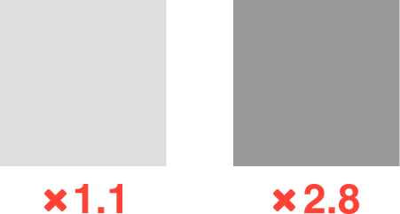

Hi there!
- UX Designer at Cantina in Boston, MA
- Occasional author at CSS-Tricks
- Janitor at the The A11Y Project
- Bad at JavaScript
Head’s up
- Video
- High contrast
- Mild strobing
The ideal
WCAG AA
We don’t live in a perfect world
Grey (eh?) and gray (ah!)
The real world is complicated
Irlen Syndrome
Scotopic sensitivity
You don’t know what you don’t know
Keep your content open and interoperable
It's important to recognise that experience is not a singular thing, our experience is not universal, not everyone accesses content the same way we do, on the same devices, on the same devices, on the same networks, in the same modalities we do.
And when we design the web in the way that we expereince it, we actually limit the way that other people experience it. We actually exclude the people that are not like us, and that's not great.
—Aaron Gustafson
High Contrast Mode
A thing that exists
Where it works
Windows 7+
Internet Explorer 10+
Microsoft Edge
Different themes
Custom themes
Who uses it:
Everyone
People experiencing a biological condition
People experiencing an environmental condition
Tell me the numbers
Nah
1.4.8
Visual Presentation
“Foreground and background colors
can be selected by the user.”
So close, and yet so far away
How it works
Semantic
HTML
Using it
/* Targets the High Contrast Black theme: */
@media (-ms-high-contrast: white-on-black) { }
/* Targets the High Contrast White theme: */
@media (-ms-high-contrast: black-on-white) { }
/* Targets any active High Contrast theme */
@media (-ms-high-contrast: active) { }
/* Targets the High Contrast Black theme: */
@media (-ms-high-contrast: white-on-black) { }
/* Targets the High Contrast White theme: */
@media (-ms-high-contrast: black-on-white) { }
/* Targets any active High Contrast theme */
@media (-ms-high-contrast: active) { }
CSS2
System Colors
| ActiveBorder | ActiveCaption | AppWorkspace | Background |
| ButtonFace | ButtonHighlight | ButtonShadow | ButtonText |
| CaptionText | GrayText | Highlight | HighlightText |
| InactiveBorder | InactiveCaption | InactiveCaptionText | InfoBackground |
| InfoText | Menu | MenuText | Scrollbar |
| ThreeDDarkShadow | ThreeDFace | ThreeDHighlight | ThreeDLightShadow |
| ThreeDShadow | Window | WindowFrame | WindowText |

High Contrast Mode Keywords
| ActiveBorder | ActiveCaption | AppWorkspace | Background |
| ButtonFace | ButtonHighlight | ButtonShadow | ButtonText |
| CaptionText | GrayText | Highlight | HighlightText |
| InactiveBorder | InactiveCaption | InactiveCaptionText | InfoBackground |
| InfoText | Menu | MenuText | Scrollbar |
| ThreeDDarkShadow | ThreeDFace | ThreeDHighlight | ThreeDLightShadow |
| ThreeDShadow | Window | WindowFrame | WindowText |
| ActiveBorder | ActiveCaption | AppWorkspace | Background |
| ButtonFace | ButtonHighlight | ButtonShadow | ButtonText |
| CaptionText | GrayText | Highlight | HighlightText |
| InactiveBorder | InactiveCaption | InactiveCaptionText | InfoBackground |
| InfoText | Menu | MenuText | Scrollbar |
| ThreeDDarkShadow | ThreeDFace | ThreeDHighlight | ThreeDLightShadow |
| ThreeDShadow | Window | WindowFrame | WindowText |
| Keyword | Content Type |
|---|---|
<a> |
Links |
windowText |
Text |
highlightText |
Selected Text Foreground |
highlight |
Selected Text Background |
buttonFace |
Button Text |
window |
Background Color |
| Keyword | Content Type |
|---|---|
<a> |
Links |
windowText |
Text |
highlightText |
Selected Text Foreground |
highlight |
Selected Text Background |
buttonFace |
Button Text |
window |
Background Color |
| Keyword | Content Type |
|---|---|
<a> |
Links |
windowText |
Text |
highlightText |
Selected Text Foreground |
highlight |
Selected Text Background |
buttonFace |
Button Text |
window |
Background Color |
| Keyword | Content Type |
|---|---|
<a> |
Links |
windowText |
Text |
highlightText |
Selected Text Foreground |
highlight |
Selected Text Background |
buttonFace |
Button Text |
window |
Background Color |
| Keyword | Content Type |
|---|---|
<a> |
Links |
windowText |
Text |
highlightText |
Selected Text Foreground |
highlight |
Selected Text Background |
buttonFace |
Button Text |
window |
Background Color |
“Isn’t this limited?”
Yes, that's the point!
Keep it predictable
Gentle nudges, not complete overhauls
Using it
/* Apply styling when High Contrast Mode is active */
@media (-ms-high-contrast: active) {
}
/* Apply styling when High Contrast Mode is active */
@media (-ms-high-contrast: active) {
input {
border: 2px solid #ffffff;
}
}
/* Apply styling when High Contrast Mode is active */
@media (-ms-high-contrast: active) {
input {
border: 2px solid buttonFace;
}
}
<span class="button" role="button" tabindex="0">
Download Pizza
</span>
<span class="button" role="button" tabindex="0">
Download Pizza
</span>
/* Apply styling when High Contrast Mode is active */
@media (-ms-high-contrast: active) {
}
<span class="button" role="button" tabindex="0">
Download Pizza
</span>
/* Apply styling when High Contrast Mode is active */
@media (-ms-high-contrast: active) {
[role="button"] {
background-color: buttonText;
color: window;
}
}
Content considerations
Background images
“Don’t use CSS background images to deliver content.”
—Terrill Thompson
Raster images
JPEGs, PNGs, GIFs, etc.
/* Slightly enhance important images */
@media screen and (-ms-high-contrast: active) {
img.hero {
filter: brightness(1) contrast(1) saturate(1.5);
}
}
SVG
Scalable Vector Graphics
/* Only applies to inline SVG */
/* Non-interactive icons */
.icon-svg {
fill: currentColor;
}
/* Interactive icons */
@media screen and (-ms-high-contrast: active) {
button.icon-svg {
border-color: buttonFace;
fill: buttonFace;
}
}
/* Static color declarations */
.bar-chart { background-color: #ffffff; }
.bar-chart .frame { stroke: #000000; }
.bar-chart .text { fill: #000000; }
.bar-chart .men { fill: #0074d9; }
.bar-chart .women { fill: #ffdc00; }
/* Dynamic color when High Contrast mode is active */
@media (-ms-high-contrast: active) {
.bar-chart { background-color: window; }
.bar-chart .frame { stroke: highlightText; }
.bar-chart .text { fill: highlightText; }
.bar-chart .men { fill: windowText; }
.bar-chart .women { fill: highlight; }
}

Media
Audio, video, etc.
Fancy tricks
Cut the Microsoft mustard
if (window.matchMedia("(-ms-high-contrast: active)").matches) {
// We have support for IE 10+
} else {
// Load a good fallback experience
}
Related Media Queries
Inverted
/* Invert inverted images */
@media (inverted-colors) {
img {
filter: invert(100%);
}
}
Light Level
/* Boost contrast between elements */
@media (light-level: washed) {
body {
background-color: #ffffff;
}
p {
color: #000000;
font-size: 120%;
}
}